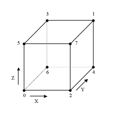

#include <flyBoundBox.h>

Public Methods | |
| flyBoundBox () | |
| Default constructor. | |
| flyBoundBox (const flyVector &min, const flyVector &max) | |
| Construct a bounding box given the minimum and maximum points. | |
| flyBoundBox (const flyBoundBox &in) | |
| Copy-constructor. | |
| void | operator= (const flyBoundBox &in) |
| Atribuition operator. | |
| flyVector | get_vert (int ind) const |
| Return the vertex corresponding to the given index. | |
| float | get_plane_dist (int ind) const |
| Return the distance of the plane corresponding to the given index (0=min[x], 1=min[y], 2=min[z], 3=max[x], 4=max[y], 5=max[z]). | |
| int | clip_bbox (const flyVector &bbmin, const flyVector &bbmax) const |
| Test for clipping between this and the bounding box whose minimum and maximum points are, respectively, bbmin and bbmax. | |
| int | is_inside (const flyVector &p) const |
| Test if point p is inside this bounding box. | |
| int | collide (const flyVector &p, const flyVector &dir, float &len) |
| Collide the bounding box moving in the direction dir with movement magnitude len and store its resulting position in p. | |
| int | collide (flyMesh *mesh, const flyBoundBox &bbtemp, const flyVector &dir, float &len, flyVector &normal, flyVector &ip) const |
| Collide the bounding box moving in the direction dir with a static mesh. | |
| int | collide (flyMesh *mesh, const flyVector &pos, const flyLocalSystem &ls, const flyBoundBox &bbtemp, const flyVector &dir, float &len, flyVector &normal, flyVector &ip) const |
| Collide the bounding box moving in the direction dir with a dynamic mesh at position pos and orientation ls. | |
| int | collide (const flyBoundBox &bbox, const flyVector &dir, float &len, flyVector &normal, flyVector &ip) const |
| Collide the bounding box moving in the direction dir with movement magnitude len with another bounding box (bbox). | |
| int | ray_intersect (const flyVector &ro, const flyVector &rd, float &tnear, float &tfar) const |
| Collide ray defined by ray origin (ro) and ray direction (rd) with the bounding box. | |
| int | edge_collision (const flyVector &p1, const flyVector &p2, const flyVector &dir, const flyVector &p3, const flyVector &p4, float &dist, flyVector &ip) const |
| Collide edge (p1,p2) moving in direction dir with edge (p3,p4). | |
| void | reset () |
| Reset all data. | |
| void | add_point (const flyVector &p) |
| Add a point to the bounding box (expand its boundaries if necessary). | |
| void | draw () const |
| Draw the box. | |
| flyMesh* | get_mesh () const |
| Return a mesh corresponding to the bounding box faces. | |
Public Attributes | |
| flyVector | min |
| bounding box minimum point. | |
| flyVector | max |
| bounding box maximum point. | |
Static Public Attributes | |
| int | facevert [6][4] |
| indices of the corresponding vertices for each face. More... | |
| int | edgevert [12][2] |
| indices of the corresponding vertices for each edge. More... | |
| int | edgefaces [12][2] |
| indices of the corresponding faces for each edge. More... | |
| flyVector | vertnorm [8] |
| normals of each vertex. More... | |
| flyVector | edgenorm [12] |
| normals of each edge. More... | |
| flyVector | facenorm [6] |
| normals of each face. More... | |
| flyVector | edgedir [12] |
| edge directions normalized for each edge. More... | |
| flyVector | edgedirth [12] |
| edgedir divided by 100 (used as thresholds for edge collisions). More... | |
This class implements an axis-aligned bounding box (AABB), which every object in the scene must have. The bounding box is used in collision calculations, and for the engine's aggressive view culling. The AABB is defined by its minimum and maximum points, and this class provides methods for testing if a given point is inside the box, testing if two AABBs intersect, calculating collision and ray-intersection.
|
|
Initial value:
{ flyVector(0,1,0),flyVector(1,0,0),flyVector(0,-1,0),flyVector(-1,0,0),
flyVector(-1,0,0),flyVector(0,-1,0),flyVector(1,0,0),flyVector(0,1,0),
flyVector(0,0,1),flyVector(0,0,-1),flyVector(0,0,1),flyVector(0,0,-1) }
|
|
|
Initial value:
{ flyVector(0,0.01f,0),flyVector(0.01f,0,0),flyVector(0,-0.01f,0),flyVector(-0.01f,0,0),
flyVector(-0.01f,0,0),flyVector(0,-0.01f,0),flyVector(0.01f,0,0),flyVector(0,0.01f,0),
flyVector(0,0,0.01f),flyVector(0,0,-0.01f),flyVector(0,0,0.01f),flyVector(0,0,-0.01f) }
|
|
|
Initial value:
{ {0,2},{4,2},{3,2},{1,2},
{4,5},{0,5},{1,5},{3,5},
{0,1},{0,4},{3,4},{1,3} }
|
|
|
Initial value:
{ flyVector(-FLY_COS45, 0,-FLY_COS45),
flyVector( 0, FLY_COS45,-FLY_COS45),
flyVector( FLY_COS45, 0,-FLY_COS45),
flyVector( 0,-FLY_COS45,-FLY_COS45),
flyVector( 0, FLY_COS45, FLY_COS45),
flyVector(-FLY_COS45, 0, FLY_COS45),
flyVector( 0,-FLY_COS45, FLY_COS45),
flyVector( FLY_COS45, 0, FLY_COS45),
flyVector(-FLY_COS45,-FLY_COS45, 0),
flyVector(-FLY_COS45, FLY_COS45, 0),
flyVector( FLY_COS45, FLY_COS45, 0),
flyVector( FLY_COS45,-FLY_COS45, 0) }
|
|
|
Initial value:
{ {0,6},{6,4},{4,2},{2,0},
{1,3},{3,5},{5,7},{7,1},
{0,5},{3,6},{4,1},{7,2} }
|
|
|
Initial value:
{ flyVector(1,0,0),
flyVector(0,1,0),
flyVector(0,0,1),
flyVector(-1,0,0),
flyVector(0,-1,0),
flyVector(0,0,-1) }
|
|
|
Initial value:
{ {1,7,2,4},{1,4,6,3},{1,3,5,7},
{0,5,3,6},{0,2,7,5},{0,6,4,2} }
|
|
|
Initial value:
{ flyVector(-FLY_COS45,-FLY_COS45,-FLY_COS45),
flyVector( FLY_COS45, FLY_COS45, FLY_COS45),
flyVector( FLY_COS45,-FLY_COS45,-FLY_COS45),
flyVector(-FLY_COS45, FLY_COS45, FLY_COS45),
flyVector( FLY_COS45, FLY_COS45,-FLY_COS45),
flyVector(-FLY_COS45,-FLY_COS45, FLY_COS45),
flyVector(-FLY_COS45, FLY_COS45,-FLY_COS45),
flyVector( FLY_COS45,-FLY_COS45, FLY_COS45) }
|